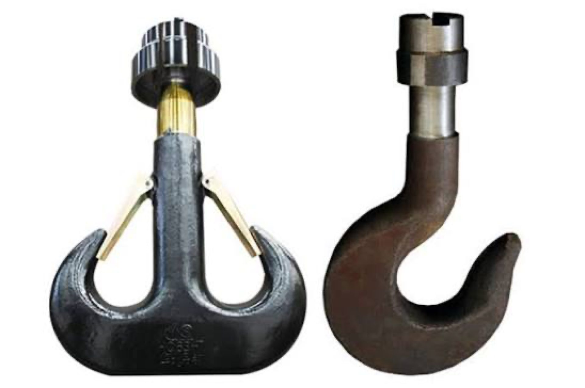
5
Подтема
Модуль 5

Вход в модуль
Во втором — из чего кран состоит
1
В первом модуле вы узнали, что от вас требуется и куда обращаться
2
В третьем — как эти детали превращаются в опасность: пять причин по гравитации…
3
Один из барьеров вы уже видели каждую смену, просто не разбирали подробно…

5.1
Подтема
Обязательность осмотра и вахтенный журнал
5.15.25.35.4
Вход в тему
В законе есть требование, которое касается лично вас каждую смену
Осмотреть кран перед началом работы и записать результат
5.15.25.35.4
Что дальше
Разберём, что требует закон от этой записи, кто ещё её видит
Что стоит сказать вслух при передаче смены
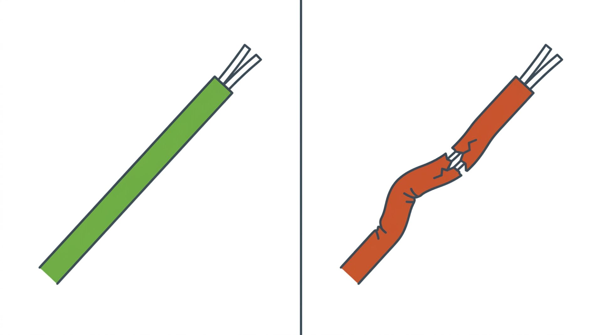
5.15.25.35.4
Обязательность осмотра и
Осмотр перед началом работы, время определяется регламентом
1
Машинисты кранов проводят осмотр перед началом работы — дословная норма закона
2
Время отводит технологический регламент
5.15.25.35.4
Обязательность осмотра и
Результат записывается в вахтенный журнал: дата, смена
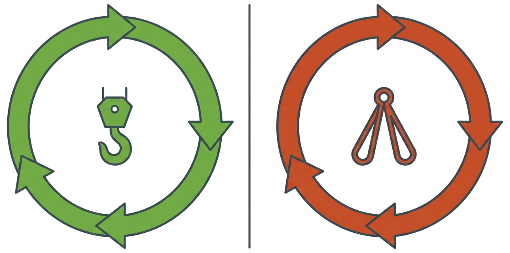
Осмотр перед сменой
Осмотр оснастки перед подъёмом
Что вы увидели своими словами, подпись при приёме и сдаче смены
5.15.25.35.4
Обязательность осмотра и
Запись — это память крана
Смысл записи не в отчётности
5.15.25.35.4
Обязательность осмотра и
Если через неделю кран поведёт себя странно, запись покажет
Было ли отклонение видно раньше
5.15.25.35.4
Обязательность осмотра и
Ещё один момент
Помимо записи в журнале, при личной передаче крана следующему оператору стоит сказать вслух то
5.15.25.35.4
Обязательность осмотра и
Короткая фраза «канат сегодня смотрел внимательнее, ничего критичного
Взгляни ещё раз» — за несколько секунд передаёт то, на что запись в журнале может не обратить…
5.15.25.35.4
Обязательность осмотра и
Кран: каждую смену
1
Важно не перепутать два разных цикла
2
Всё, о чём мы говорили выше, — это осмотр самого крана перед вашей сменой
3
У съёмной оснастки — строп, траверс, захватов, тары — свой отдельный график, и…
5.15.25.35.4
Обязательность осмотра и
Периодический осмотр не заменяет осмотр перед применением
Причина простая: строп с действующей отметкой мог быть повреждён сегодня утром…
5.15.25.35.4
Итог подтемы
Осмотрели → записали → сказали вслух → подпись
Простая привычка, которая экономит время — и не только вам, но и тому, кто…
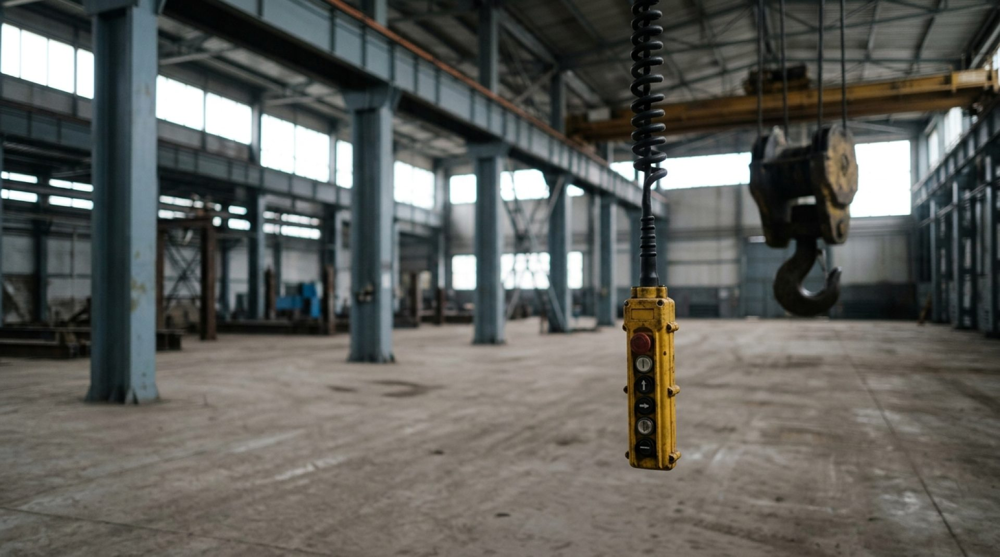
5.2
Подтема
Осмотр на практике: маршрут по узлам для каждого типа…
5.15.25.35.4
Вход в тему
Что конкретно смотреть перед записью в журнал?
Здесь есть нюанс: маршрут осмотра не совсем одинаков для всех трёх типов крана…
5.15.25.35.4
Что дальше
Пройдём общий принцип, а затем — что именно отличается для каждого…
5.15.25.35.4
Осмотр на практике
Пять зон общие для любого крана: крюковая подвеска
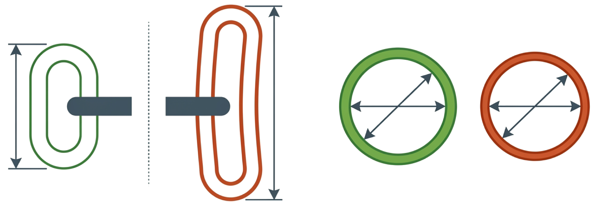
Тормоза, пульт управления, место крепления механизма подъёма к несущей конструкции
5.15.25.35.4
Осмотр на практике
Различается то, где физически находится каждая зона
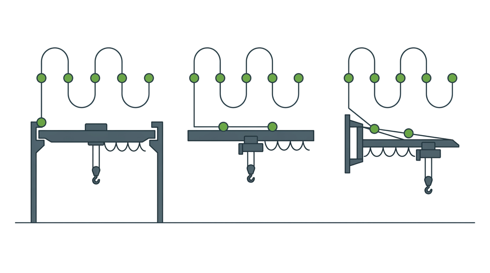
5.15.25.35.4
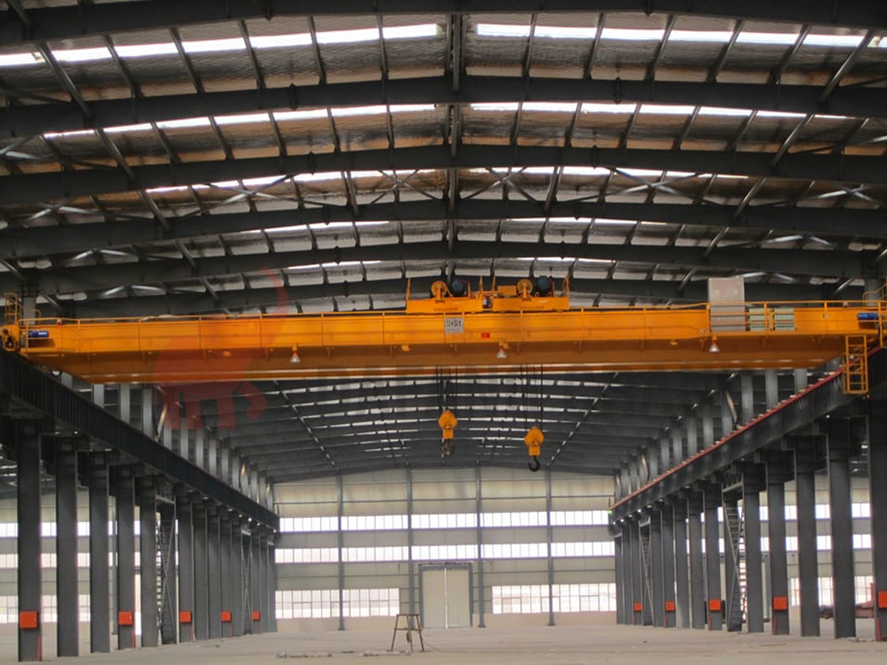
Осмотр на практике
Отдельная часть — несущая конструкция моста и подкрановые пути
Мостовой кран осматривается в основном снизу: крюковая подвеска и канат хорошо…

5.15.25.35.4
Осмотр на практике
Если предусмотрен выход на галерею — туда заходят по отдельной процедуре…
Допуска, это уже не часть вашего ежедневного осмотра с пола

5.15.25.35.4
Осмотр на практике
Проверьте, что поворотный механизм двигается плавно, без заеданий
Консольный кран — дополнительно смотрите место крепления консоли к стойке или…
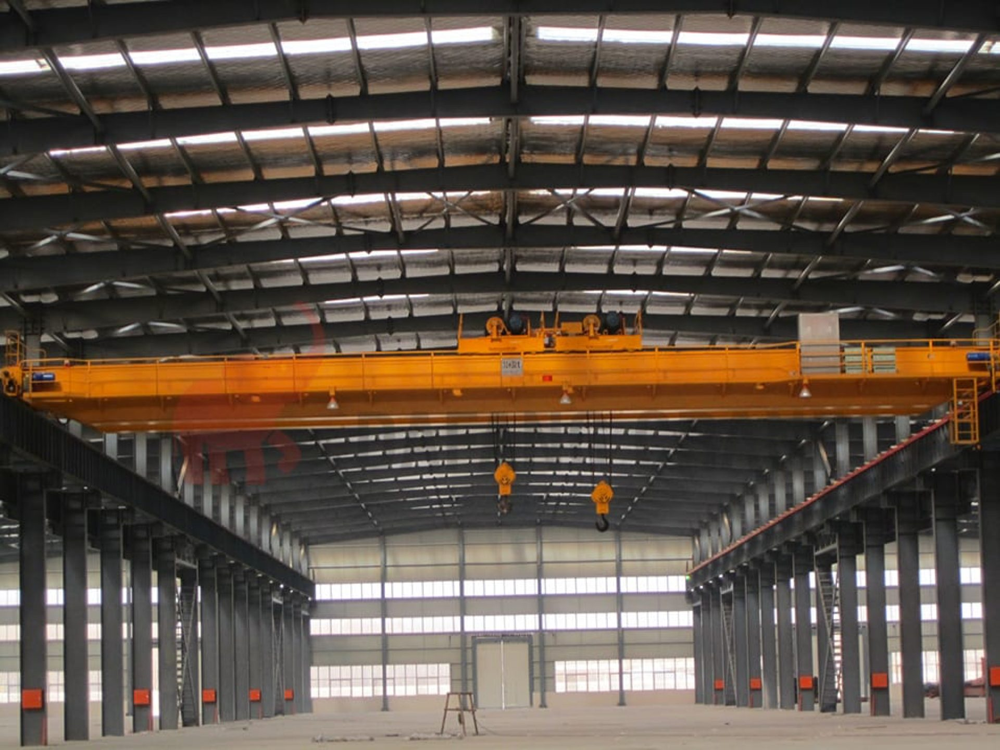
5.15.25.35.4
Осмотр на практике
У передвижного консольного крана добавляется рельсовый путь

5.15.25.35.4
Осмотр на практике
Таль — проверьте крепление к монорельсу, тележка держится правильно
5.15.25.35.4
Осмотр на практике
Осмотрите сам монорельс на видимом участке — нет ли повреждений
Особенно в местах стыков секций

5.15.25.35.4
Осмотр на практике
Правила обеспечения промышленной безопасности при эксплуатации грузоподъёмных механизмов
Ещё момент, полезный на будущее
5.15.25.35.4
Итог подтемы
Пять общих зон + одна особенная под ваш тип крана
Общие пять зон плюс одна дополнительная: пути у мостового, узел крепления у…
5.3
Подтема
Как распознать износ каната и цепи
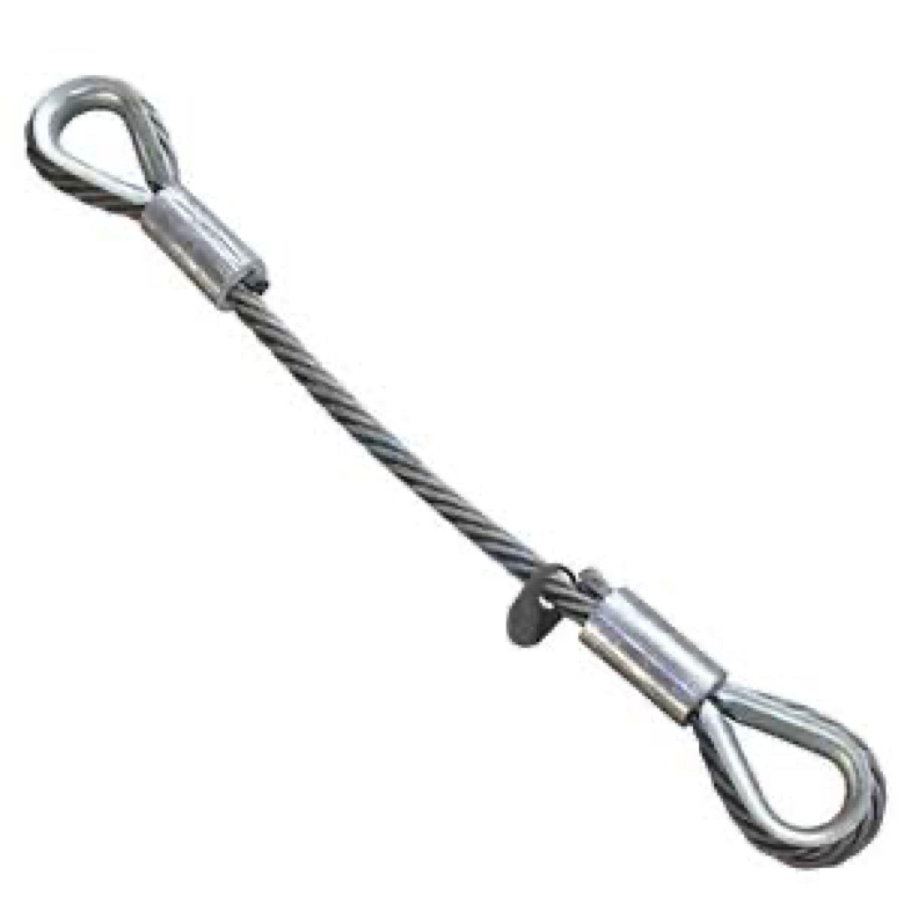
5.15.25.35.4
Вход в тему
Канат редко рвётся весь сразу
Обычно сначала обрывается одна проволока
5.15.25.35.4
Что дальше
Дальше — не только сами признаки, но и рабочий алгоритм
Что делать в момент, когда заметили что-то
5.15.25.35.4
Как распознать износ каната и
Проволока
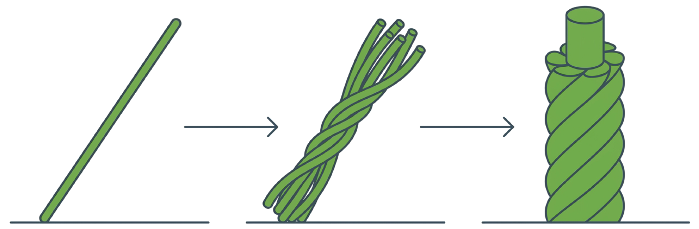
Несколько проволок, скрученных вместе, — прядь Несколько прядей вокруг сердечника — канат целиком
5.15.25.35.4
Как распознать износ каната и
Оборванная проволока
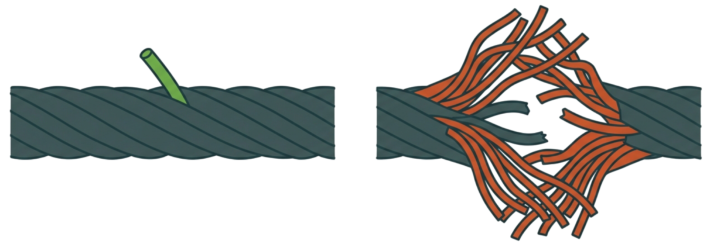
Если оборвались отдельные проволоки — правила допускают некоторое их количество по таблице
5.15.25.35.4
Как распознать износ каната и
Для примера, чтобы почувствовать масштаб
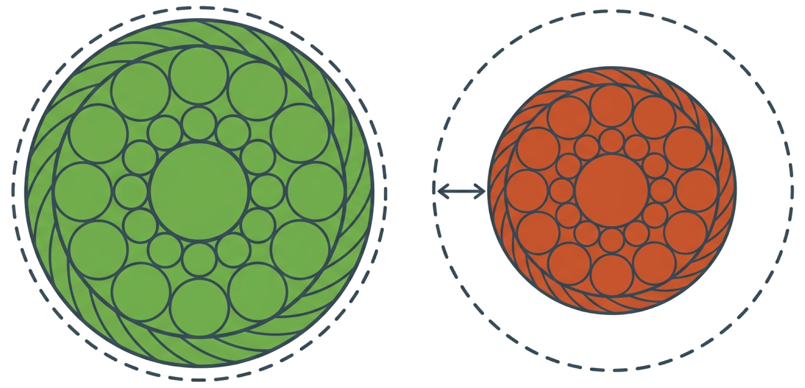
На семь процентов и больше — уже брак, даже без единого видимого обрыва
5.15.25.35.4
Как распознать износ каната и
Увидел признак → НЕ измерять самому → прекратить…
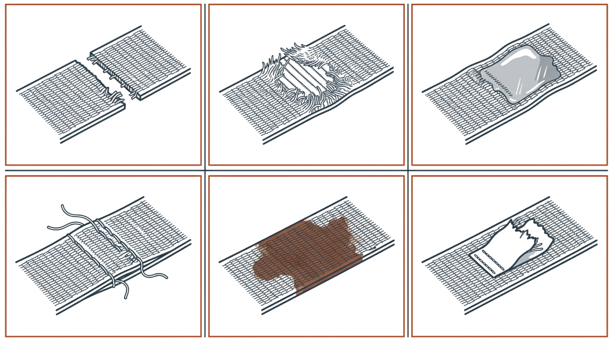
Здесь важно правильно понимать свою роль
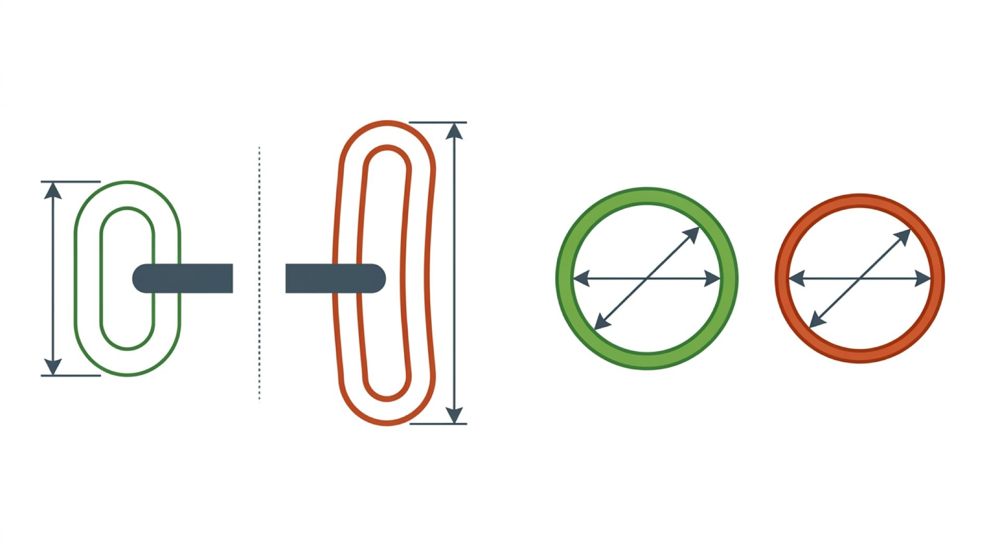
5.15.25.35.4
Как распознать износ каната и
Небольшой на вид дефект — та же цепочка действий
Небольшой сегодня — не значит, что останется небольшим через неделю работы под…
5.15.25.35.4
Как распознать износ каната и
По правилам повреждённое приспособление не откладывают
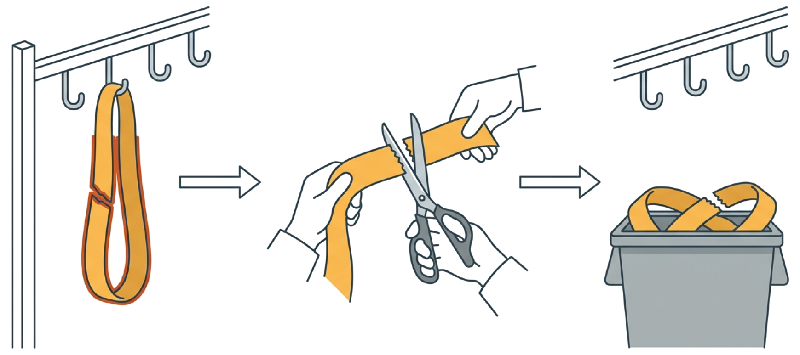
Отдельно — что происходит с забракованным стропом дальше
5.15.25.35.4
Как распознать износ каната и
Деформация формы видна без измерений: раскрывшаяся «корзина»…
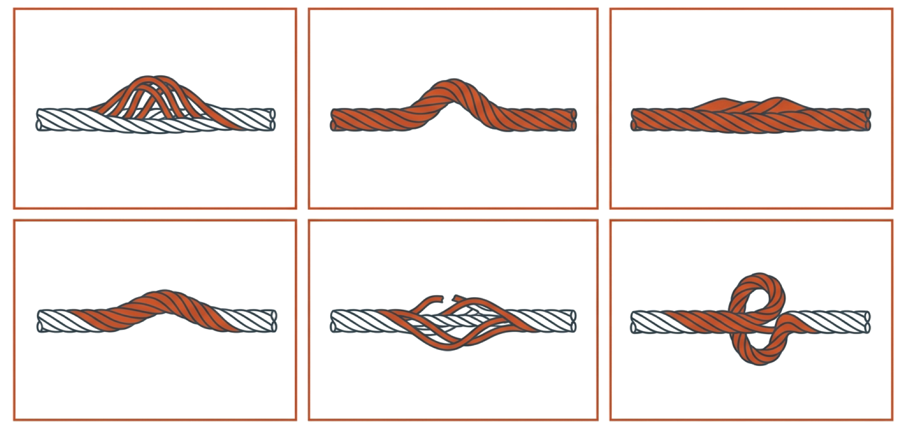
Из разошедшихся прядей, заметное утолщение или утоньшение, перекручивание, залом
5.15.25.35.4
Как распознать износ каната и
Любой из этих признаков — та же цепочка: прекратить, сообщить, записать
5.15.25.35.4
Как распознать износ каната и
Инструкция изготовителя — первый источник норм
Точные нормы браковки в первую очередь смотрят в руководстве по эксплуатации…
5.15.25.35.4
Итог подтемы
Не измеряйте сами. Увидели — остановили — сообщили — записали
Ваша роль — не эксперт по металлу, а первый барьер, который замечает и не…
5.4
Подтема
Когда работа краном не допускается

5.15.25.35.4
Вход в тему
Начать и последить, или остановиться?
Осмотр показал что-то не критичное на вид, план поджимает
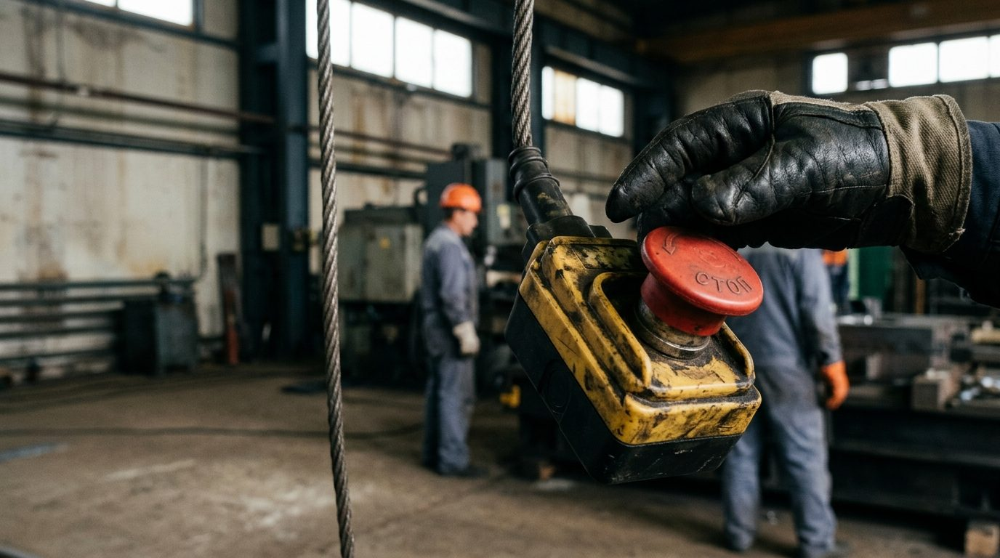
5.15.25.35.4
Что дальше
Какие находки — однозначный стоп, а какие — только повод уточнить
Кому конкретно сообщать в каждом случае: сейчас по порядку
5.15.25.35.4
Когда работа краном не допускается
Сообщить: специалист по исправному состоянию
Сюда же — неисправность заземления или видимое повреждение электрической части крана: оголённый провод, искрение там

5.15.25.35.4
Когда работа краном не допускается
Сообщить: ответственный за безопасное производство работ
1
Повод уточнить: истёк ли срок освидетельствования, странный необъяснённый звук…
2
Здесь обращаетесь к ответственному за безопасное производство работ — тому, кто…

5.15.25.35.4
Когда работа краном не допускается
Отдельное условие — для тех, чей кран работает не только в цехе
И на открытой площадке или в неотапливаемом пролёте, о чём мы говорили в Модуле втором
5.15.25.35.4
Когда работа краном не допускается
Не рекомендация переждать, если удобно, а норма
Которая действует независимо от графика
5.15.25.35.4
Когда работа краном не допускается
Находка фиксируется, кран простаивает до решения специалиста
1
Запись в журнал обязательна во всех случаях
2
Кран не работает, пока вопрос не решит тот, кому вы сообщили
5.15.25.35.4
Итог подтемы
План может подождать. Барьер — нет
Решение о допуске крана к работе принимаете не вы под давлением обстоятельств…
5.15.25.35.4
Заключение модуля
Осмотр перед сменой — не формальность, а барьер
Вы различаете оборванную проволоку и оборванную прядь
5.15.25.35.4
Заключение модуля
Знаете точные цифры: семь процентов по диаметру
Знаете точные цифры: семь процентов по диаметру, сорок по износу проволоки, три…
И знаете, кому сообщать: специалисту по исправному состоянию для технических…
Дальше — Модуль шестой: сам процесс работы — с того, что решается до того, как…